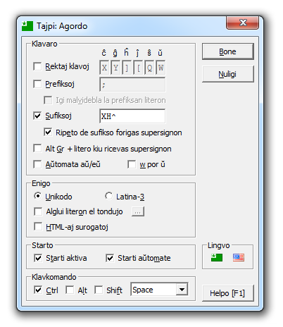
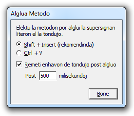

Tajpi - Klavarilo por esperantistoj
Tajpi - Klavarilo por esperantistoj
Agordo de la programo
Ĉi tiu paĝo enhavas instrukciojn por agordi Tajpi. Por informoj pri TajpiSkripto bonvolu iri ĉi tien.
Kiam Tajpi unuafoje ekfunkcias, ĝi petas ke vi agordu ĝin. Jen la agordofenestro:

- Rektaj klavoj - Ligi supersignajn esperantajn literojn al rektaj, unuopaj klavoj. Kiam tajpiĝas la klavo, aperas
la supersigna litero. Por entajpi la rektan klavliteron mem, premu Alt Gr (aŭ Ctrl+Alt) dum premo de la klavo.
- Prefiksoj - Supersigna litero aperas kiam c, g, h, j, s aŭ
u tajpiĝas tuj post prefiksa simbolo.
- Igi malvidebla la prefiksan literon - Prefiksaj literoj ne aperas kiam ili entajpiĝas. Por aperigi la prefikson,
tajpu Space tuj poste, aŭ tajpu iun ajn nesupersigneblan simbolon por aperigi ĝin kune kun la prefikso. Tio
simulas la konduton de la tielnomataj senpaŝaj klavoj kiuj ekzistas en multaj klavarfasonoj.
- Sufkisoj - Kiam unu el la elektitaj sufiksoj entajpiĝas tuj post c, g, h,
j, s aŭ u, la litero ricevas supersignon. Defaŭlte la sufiksoj enhavas H, sed parolantoj de aliaj
lingvoj (ekzemple la angla) eble volos elpreni ĝin por ke supersignoj ne aperu je tajpo de "ch", "sh" ktp.
- Ripeto de sufikso forigas supersignon - Retajpo de la sama sufikso uzita por supersigni la literon forigas
la supersignon.
- Alt Gr + litero kiu ricevas supersignon - Premo de Alt Gr (aŭ Ctrl+Alt) kune kun
c, g, h, j, s aŭ u aperigas supersignan literon. Ekzemple
Alt Gr+C aperigas ĉ.
- Aŭtomata aŭ/eŭ - Litero u tajpita post a aŭ e aperas kiel ŭ.
- w por ŭ - Litero w estas uzata anstataŭ u por aperigi ŭ. Tio estas utila se estas konflikto
kun metodo en la sistema klavarfasono por alie supersigni u.
- Unikodo / Latina-3 - Supersignaj literoj venas el signaro aŭ Unikodo aŭ Latina-3. Pli rekomendinda estas Unikodo.
Inkludita estas Latina-3 por tiuj kiuj volas ankoraŭ uzi siajn malnovajn tiparojn de Latin-3, aŭ programojn kiuj ne plene subtenas
Unikodon.
- Alglui literon el tondujo - Anstataŭ sendiĝi rekte al la sistemo, supersignaj literoj pasas al la tondujo
(clipboard) kaj algluiĝas el ĝi.
Apud ĉi tiu opcio estas butono, klako je kiu aperigas fenestron per kies opcioj oni povas elekti la metodon, kiun Tajpi uzu kiam ĝi
algluas la supersignan literon el la tondujo. Jen la fenestro:

Rekomendinda estas Shift+Insert sed Ctrl+V estas ebla alternativo kaj probable ne kaŭzos problemon.
Kiam litero pasas al la tondujo la jama enhavo forviŝiĝas. Sed eblas remeti la enhavon de la tondujo per la opcio "Remeti enhavon
de tondujo post algluo"; kiam elektita, la tonduja enhavo estas remetita post tiom da milisekundoj, kiom specifitaj en la tekstkampo
"Post milisekundoj". Bonvolu rimarki ke ĉi tio funkcias por nur teksto. Dosierojn, bildojn kaj aliajn datumspecojn Tajpi ne subtenas.
- HTML-aj surogatoj - Tajpi enigas HTML-an surogaton anstataŭ la supersignan literon. Ekzemple ĉ anstataŭ ĉ.
Utila ileto por retverkistoj.
- Starti aktiva - Kiam Tajpi komenciĝas ĝi estas en aktiva stato.
- Aŭtomata starto - Tajpi aŭtomate komenciĝas kun Windows.
- Klavkomando - Agordo por la klavkomando kiu ŝaltas/malŝaltas Tajpi.
- Lingvo - Klako al flagoj kaj
 ŝanĝas la lingvon de la interfaco inter Esperanto kaj la angla.
ŝanĝas la lingvon de la interfaco inter Esperanto kaj la angla.